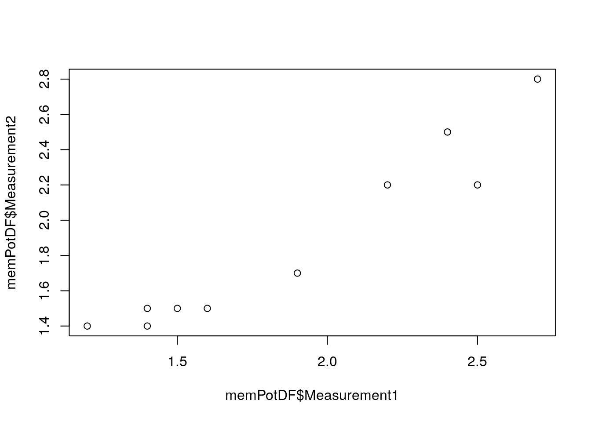

Introduction to R
Chris Ruis
In this tutorial, we’re going to run through the basics of R. R is a programming language that is brilliant for data analysis and plotting and contains a whole series of useful additions for analysing more complicated data like RNASeq and phylogenetic trees. R is very good at doing anything you might usually do in excel, plus a whole lot more. You can write your analyses in the form of a script which means your work will be reproducible and you won’t have to remember all of the specifics of what you’ve done to be able to do it again. The easiest way to get up and running with R is to download RStudio (https://rstudio.com/products/rstudio/download/ the free version is fine). You can write all of the code in RStudio and it contains handy features like a help bar and a window for plots.
Each section finishes with a set of exercises that put into practice what we’ve covered in that section.
1 Variables and data types
So if you open RStudio, you should see four windows. For this tutorial, we’re going to use the bottom left window, which has a little tab above it saying “Console”. The first thing we’re going to look at is variables. Whatever level of programming expertise you reach, you’re going to use variables. Variables are objects that you can multiply, plot, perform complex calculations on or do pretty much anything else with. This next bit of code generates a variable ‘a’ and gives it a value of 1. When you see a box like this, type everything before the ‘#’ into that bottom left window in RStudio, one line at a time. The text after the # gives you a bit more information about the code
a <- 1 #Type this line before the # into the bottom left window of RStudio
print(a) #And then type this line before the #Ok, so what have we just done? The line “a <- 1” creates a variable called “a” and gives it a value of 1. This means that whenever we type “a” into R, R will interpret that “a” as the number 1. So when we then type “print(a)”, R interprets the “a” as 1 and prints 1 to the screen. Whenever you want to create a new variable, we use “variable <- value”. As we’ll see later on, that value doesn’t just need to be a single number. Why the “<-” is used, I have no idea - surely “=” would be easier. But “<-” is what is used to assign a variable to a value.

As a brief but important aside, you need to keep in mind the type of data that you’re working with. When we read some text, our brains see words and recognise them as words. While if we see a number, our brain recognises that as a number. R won’t necessarily recognise words as words or numbers as numbers, so we need to make sure that our data is recognised correctly. There’s 3 main data types to recognise: character (what we’d recognise as words or text), numeric (numbers, either whole numbers or decimals) and logical (true or false). R will do different things with these different data types - for example you can’t multiply a word by 2. Here’s a few lines of code to illustrate the different variable types:
a <- 1 #This assigns the variable a to a numeric value
typeof(a) #Prints "double" which is what R calls numerical values
a * 2 #R knows "a" is a number so multiplies this by 2 as we would expect
b <- "flotolab" #This assigns the variable b to a character object
typeof(b) #Prints "character"
b * 2 #Should print an error message as R doesn't know how to multiply a word by 2
d <- TRUE #This assigns the variable d to a logical value
typeof(d) #Prints "logical"When we tried to multiply b by 2, we get an error message because b is not a numerical variable, so R doesn’t know how to multiply it (neither do I, come to that). Most of the time, you’ll probably work with numbers and R will try to interpret your data as numbers where it can. So most of the time, you don’t need to do anything to work with your data. But if you get an error message, the type of the variable is often a good place to start to see what might be going wrong.
Exercises
- Create a new variable containing your favourite number and multiply it by 10
- Create a new variable containing your name
2 Vectors
So we’ve seen how to create simple variables that contain individual numbers or words. But most of the time, we’re not dealing with single values. Most data consists of a series of values. So how do we deal with series of values in R? The answer will often be to use a vector. Say we’ve measured the membrane potential of 10 different cells. We can represent these 10 measurements as a vector using:
To create a vector, we use the “<-” as before to create a new variable called memP otMeasurements. But now, instead of assigning that variable to a single value, we assign it to a set of values. We use “c()” to create a vector of the values within the brackets.
R is very good at working with vectors as you can perform mathematical operations on the entire vector in one go. For example:
Compare the output from this to the values that we assigned to memPotMeasurements. You should see that R has multiplied every value within the vector by 2. This is what R will do with vectors by default. The variable memPotMeasurements has not, however, been changed. Type:
You can see that memPotMeasurements still contains the values that we initially assigned. When we performed the function above, R printed the new values to the screen but left the original variable unchanged.
Exercises
- Create a new variable containing 10 numbers (any numbers you like) and multiply these numbers by 10
3 Data frames
Vectors can be useful when you have a series of measurements of a single variable. However, what about when we have tables of data? In this case, its most common to use a data frame and indeed, this is probably what you’ll use most in R. I think of a data frame as being like an excel spreadsheet - you have columns and rows in the same way and I’ll often look at the data in R data frames before and/or after in excel. So basically any data that you usually look at in excel, you can represent as a data frame in R. With vectors, you can only have one data type - for example try typing:
We look at myVector and we see 5 numbers and 1 letter. However, R will treat all of the data in a vector as a single data type so when you print myVector, you can see the values are all surrounded by quotes, which is how R shows its treating them all as character values. Therefore we get an error message when we try to multiply the vector by 2. Data frames are a little different. Every column in a data frame can have a different data type, but the data type has to be the same within a column. This is very similar to how we’d normally have data in excel, with maybe columns of sample names and columns of numerical measurements.
To create a data frame we use:
memPotDF <- data.frame(Sample = c("Sample1","Sample2","Sample3","Sample4","Sample5"), Measurement1 = c(1.2,1.4,2.5,2.7,1.6), Measurement2 = c(1.4,1.5,2.2,2.8,1.5))
print(memPotDF)We’ve created a data frame that has 3 columns. The first column is the sample name and then columns 2 and 3 are here independent measurements of the membrane potential in that sample. Column 1 contains character data while columns 2 and 3 contain numerical data. What we’ve actually done when we’ve created the data frame is made 3 vectors called “Sample”, “Measurement1” and “Measurement2” and then combined those vectors into a data frame.
We can carry out operations on individual columns, rows or cells of a data frame. Here, we use square brackets to tell R which row(s), column(s) or cell(s) we want to specify. To tell R we want to pick out values from within a data frame, we put square brackets after the data frame name, like so: memPotDF[,]. The comma within the square brackets is used to identify rows and columns. So to pick out one or more rows, put the number(s) of the row before the comma, so memPotDF[1,] will extract row 1. For a column, put the number(s) of the column after the comma, so memPotDF[,1] will extract column 1. If you want a specific cell in the data frame, give its row and column position, so memPotDF[1,1] picks out the value in column 1 of row 1. Here’s some examples of pulling out rows, columns, cells and doing things with those values:
memPotDF[1,] #Print row 1
memPotDF[,1] #Print column 1
memPotDF[1,1] #Print the value in column 1 of row 1
memPotDF[,2] * 2 #Multiply all values in column 2 by 2
memPotDF[2,2] * 2 #Multiply the value in column 2 of row 2 by 2
memPotDF[c(1,2),] #Print rows 1 and 2
memPotDF[1:2,] #Also prints rows 1 and 2
memPotDF[1:2,1] #Print the value in column 1 of rows 1 and 2
memPotDF[c(1,2),c(1,2)] #Print the values in columns 1 and 2 of rows 1 and 2
memPotDF$Measurement1 #Print the column in the data frame with name Measurement1
memPotDF$Measurement2 * 2 #Multiply all values in the column with name Measurement2 by 2There’s 2 ways of picking out a column of interest. You can either use the column number in square brackets or use “$” followed by the column name. So memPotDF[,2] and memPotDF$Measurement1 give the same output. Likewise, there’s two ways of picking out multiple columns or rows of interest. You can either use c(1,2) which extracts the columns or rows within the brackets (through creating a vector with the specified numbers in). Or, if and only if you want to pull out a continuous run of columns or rows, you can use 1:2 which creates a sequence containing the integer numbers between the first and second numbers and extracts these columns or rows. so memPotDF[,c(1,2)] and memPotDF[,1:2] give the same output.
Exercises
- Create a data frame with 2 columns - the first column containing your 5 favourite TV shows and the second column containing the number of episodes of those TV shows you reckon you’ve watched in the last month (roughly, hopefully its less than 3 figures)
- Use square brackets to pick out the number of episodes you’ve watched of your second favourite TV show
- Imagine your TV watching is going to be similar next month to this month. Calculate the number of episodes of each show you will have watched across the 2 month period by multiplying the number of episodes column by 2
4 Functions
So we now know how to create variables containing individual values, sets of values and tables of values and how to perform some simple operations with them. But you’ll often want to perform more complicated operations than multiplying values. To do this, you can use functions. Functions take an input, do something to that input and give you an output. As an example using our memPotMeasurements vector from above:
Here, “mean” is the function and the object(s) within the brackets are the input to the function. It takes our vector as input, calculates the mean of the values in that vector and gives us that mean as the output. We can also calculate the mean of a column in our data frame using:
Which will give us the mean of the values in column 2 of memPotDF. R contains hundreds of functions, each of which takes some input, carries out some particular operation or set of operations and gives you some output. The type of data used as input and given as output will be different for different functions. There’s pretty much always a function that will do what you want to do with your data, the art is in finding it! You’ll see more functions in the statistics tutorial but for now here’s a few examples:
print(object) #Prints the object to the screen, will work with any type of data
mean(object) #Calculates the mean of an object
median(object) #Calculates the median of an object
seq(from, to, by) #Creates a sequence of numbers starting at "from" and ending at "to" with increasing each value by "by"The functions print(), mean() and median() take a single object. But not all functions take a single value. The function seq() is an example of a function that takes 3 “arguments”. The purpose of seq() is to produce a sequence of numbers and the 3 arguments determine the sequence that will be produced. The sequence will start at the number given by “from”, will end at the number given by “to” and will ascend or descend by the number given by “by”. Try:
These 2 commands give us the same output and illustrate that there’s different ways of running the function. As we know that seq() takes 3 arguments, we can either just give it 3 numbers, 1 per argument, or we specify which numbers correspond to each variable in the function, which here are “from”, “to” and “by”. If ever you’re not sure about how to run a function or what needs to go in it, type “?” followed by the function name, for example:
This will bring up the help page for the function in the bottom right window of RStudio which contains the details on how to run the function. Most functions will only work with a specific data type, so if the function isn’t working as you’d expect checking that you’re giving it the correct type of data is often a good place to start.
You can also create your own functions. For example, if there’s a particular operation that you regularly carry out with your data, you can either write the code to do that each time or your can write a function. Writing it as a function has the advantage that you know its doing the same each time you run it and it will save you having to type it each time. So let’s write an example function:
We’ve created a function here called “multiplyTwoNumbers”. We assign the function to the name “multiplyTwoNumbers” using the “<-” just as we’d assign a value to a variable. The function(x,y) part says that the function is going to take 2 values. The code between the “{” and “}” is the code that will run within the function. So here, the function adds 1 to the number “x” and assigns that to a new variable “z”. It then multiplies “z” by “y”. And then prints the output to the screen. To run that function we use either of:
So once you’ve written the code for the function, you run it exactly as you would one of R’s in built functions.
Exercises
- Write a function that takes 3 numbers, multiplies the first two numbers together and adds this to the third number
- Run your function on different sets of 3 numbers
5 Libraries
The functions we ran above are all quite generic and simple functions. But the types of data that we work with are often quite complex and we want to do things that are far more complicated. The good news is that most of what we need to do, other people have needed to do before. And even if they haven’t, people have usually wanted to do something quite similar. There’s a whole series of more complicated functions that are found in libraries. A library is a set of functions that can be useful for a particular type of tasks. For example, if you’re working with RNASeq data, there’s a library called DESeq2 that contains all of the functions you need to carry out differential gene expression analysis. If you want to work with a phylogenetic tree (which everyone should), there’s a library called ape which contains lots of functions to analyse phylogenetic trees. And for most of these libraries, there’s good documentation and tutorials online to help you get up to speed with exactly how to run all of their functions. Setting yourself up to use the functions in a library requires 2 commands:
The first step is to install the package on your computer and that’s what the first line of code does. Once you’ve installed the package, you need to load it to use the functions and you do that with “library(PackageName)”. You only need to install the package once but you’ll need to reload the library every time that you open a new RStudio session.
Exercises
- Install and then load the package ggplot2
<<<<<<< HEAD #Data tables
We learnt how to use data frames in the previous section. Data tables are a more powerful version of a data frame and its a bit easier to do things like selecting particular columns and pulling out rows that match particular criteria.
6 #Loops and conditionals
7 Loops and conditionals
3491b5a9141685aaee63ae8d63caace5abdccde6
Often you’ll find that you have a set of data and you want to do the same thing with each of the individual data points in the set. We saw earlier how you can multiply all of the values in a vector or column but what if you want to do something more complicated? And what if you only want to perform an operation with a subset of the data, for example if they match a particular criteria. One way in which you can achieve this is using for loops and if statements. Here’s a couple of examples of for loops and if statements that are similar to things you may want to do with your data:
#In this first example, we're going to start with a vector and multiply each value in the vector by 2 in turn
allValues <- c(1,2,3,4,5) #Create a vector containing 5 numbers
for (eachValue in allValues) {
print(eachValue * 2)}The for loop goes through each value in an object in turn and does something with it. Here, we type “for (eachValue in allValues) {”. The for loop goes through the object called “allValues” and takes one value at a time. It gives the value it is currently on the name “eachValue” so you can refer to it and do things with it in the rest of the for loop. You can give the value whatever name you like here, I’ve used eachValue but it often helps to call it something relevant to your data to help you remember exactly what you’re iterating through. With a for loop, you tell R which values you want to go through using the text between the “(” and “)”. You then have one or more lines of code between the “{” and “}” which says what you want to do with each value. In our case here, we want to multiply each value by 2 and print the resulting number to the screen. That’s the basic setup of a for loop. You tell R what values you want to iterate through and then you say what you want to do with each of those values. This is a slightly more complicated example but still has the same basic setup:
#In this example, we're going to start with a vector of numbers and we're going to add the numbers to a new vector if and only if the number is less than 5
allValues <- c(1,4,6,8,10) #This is our vector containing all of the values
valuesLessThan5 <- c() #This is an empty vector, we create it as we would a normal vector but we don't yet put any data in it, we're going to add the numbers in allValues to this if they are less than 5
for (eachValue in allValues) { #Iterate through the values in allValues
if (eachValue < 5) { #Check if the value is less than 5
valuesLessThan5 <- c(valuesLessThan5,eachValue)}} #If it is, add it to vector valuesLessThan5
valuesLessThan5As before, we here iterate through the 5 numbers in allValues. We only want to continue with the value if it is less than 5 and we check that using the line “if (eachValue < 5) {”. The if statement checks if a particular condition specified between “(” and “)” is met and if and only if it is, will run the code between “{” and “}”. Here, we check if the current value we’re on in the iteration is less than 5 and if it is we continue. If it isn’t, R will move on to the next value in the for loop. If the value is less than 5 we add it to the end of the vector valuesLessThan5. Here, we have two pairs of “{}” brackets, one for the for loop and one for the if statement. These define the start and end of the code associated with the for loop and if statement so we have to keep track of these and make sure we close them at the right point.
Combining for loops and if statements can be very useful when analysing data. For example, you can go through all of the genes in your gene list with the for loop and keep or discard the gene if it matches some condition in the if statement.
Exercises
- Using your TV show data frame from exercise 4 (recreate it if you need to), use a for loop to print each of the TV shows in turn (HINT: Pick out the column first)
- Combine a for loop and if statement to print the number of episodes you’ve watched if this is more than 5
8 Reading and writing files
All of the examples we’ve run so far have been using example data that we’ve coded in R ourselves as part of the example. But how do you use your data and how can you save the output from your code? R contains a whole series of functions to read in and save pretty much any type of data you can imagine. For more complicated data types, the functions to read in and save the data are often included in their specialised libraries. Here, we’re first going to save a data frame to a file and then read that data frame back into R. We’ll start by recreating one of the data frames we used earlier:
memPotDF <- data.frame(Sample = c("Sample1","Sample2","Sample3","Sample4","Sample5"), Measurement1 = c(1.2,1.4,2.5,2.7,1.6), Measurement2 = c(1.4,1.5,2.2,2.8,1.5))
print(memPotDF)We’ve got a data frame here with 3 columns and 5 rows. First, before we focus on how to save a file, where will R save it? RStudio will save files in the folder you are currently running it in. By default this will be your home directory. Its usually best to change this and you do that in the bottom left window. If you want to save things in your Documents folder, you’d type:
The setwd command sets the working directory and the folder in the quotes will be where the working directory is set. If you’re not sure where the current folder is type setwd("“) and then with your cursor between the quotes press tab twice on your keyboard. This will show you the options. You can continue to add directories as you would click through folders to set the location you’d like to save files. The directories need to be given relative to the directory you are currently in. So if you type setwd(”Documents“) and there’s no directory called”Documents" in your current directory, R won’t know which directory you want to change to. If you’re not sure which directory you’re currently in, typing setwd(“~”) will take you to your home directory and you can change through the directories from there.
We can now save our data frame. You can save it in any format you want, let’s try two common ones:
write.csv(memPotDF,"test_save_R_data.csv",row.names=FALSE,quote=FALSE)
write.table(memPotDF,"test_save_R_data.txt",row.names=FALSE,quote=FALSE,sep="\t")These two commands save our data frame as a csv file and text file, respectively. As with all commands, you can use ?write.csv and ?write.table to see the full list of options. But the first thing we give the command is the name of the data frame we want to save, here memPotDF. We then give it the name of the file. And then some options, I tend to use row.names=FALSE as I don’t want the names of the rows, and quote=FALSE as I don’t want quotes. The function write.csv will save a csv file with each column separated by “,”. The function write.table is a bit more flexible and you can have any character between columns. You set the column delimiter you want using sep and here we’ve separated columns with a tab, denoted by “\t”. You can also write a csv file with write.table by using sep=“,”.
Now that we’ve saved the data frame, let’s read it back in again! To do that, we can use:
newMemPotDF <- read.csv("test_save_R_data.csv")
newMemPotDF <- read.table("test_save_R_data.txt",sep="\t",header=TRUE)You’ll need to use the setwd command to get RStudio in the same directory as the file you want to read in or give the read.csv or read.table commands the file path relative to the current working directory. The read.csv command is nice and simple. You just give it the name of the csv file you want to read in. Make sure its a csv file though as read.csv won’t work properly with any other type of file. The read.table command can read files in with columns separated by any delimiter. You tell the command what the column delimiter is using sep, here a tab. You also need to tell read.table that your file contains column names using header=TRUE. If it doesn’t, you can leave this part out.
Exercises
- Save your TV show data frame from exercise 4 (recreate it if you need to) as a csv file
- Read the csv file you just saved into R
9 Plots and ggplot
One of the great strengths of R is its plots. The basic plots are nice but ggplot produces much nicer plots, but does take a bit of getting used to. You’ll most often plot data from a data frame. Let’s set up a basic data frame of membrane potential measurements as we have before:
memPotDF <- data.frame(Sample = c("Sample1","Sample2","Sample3","Sample4","Sample5","Sample6","Sample7","Sample8","Sample9","Sample10"), Measurement1 = c(1.2,1.4,2.5,2.7,1.6,2.4,2.2,1.9,1.4,1.5), Measurement2 = c(1.4,1.5,2.2,2.8,1.5,2.5,2.2,1.7,1.4,1.5))
print(memPotDF)We’ve now got 10 samples each of which has 2 measurements. Let’s do a basic plot and see if there’s a correlation between the 2 measurements:
You should get a plot that looks like:

We’ve plotted column Measurement1 in memPotDF (specified using $) against column Measurement2 in memPotDF. It looks like there’s a correlation between the measurements, although we should probably do some stats on it, more on that in a later part of the course. That plot looks fine but ggplot plots look much nicer! We’ll need to load the library ggplot2 to use these plots and the code we use will be slightly different:
library(ggplot2)
ggplot(memPotDF,aes(x = Measurement1, y = Measurement2)) + theme_classic() + geom_point()The code we write for ggplot is a bit unusual and its not quite as simple to understand as for the standard plot. We start the plot command with ggplot(). The first item in the brackets (memPotDF) tells R which data frame we want to plot. Within the aes() brackets, we say what column name we’d like on the x-axis and what column name we’d like on the y-axis. R uses the column names to pick out the data to plot. You then add additional parts to the plot with “+”. Here, we’ve added “+ theme_classic()” which plots on a white background instead of the standard grey. And we’ve added “+ geom_point()” which tells R that we want to plot the data as points. This should give us a plot that looks like:
Which looks a bit nicer than the standard plot. Working with ggplot is an entire tutorial in itself as you can add colours, shapes and other datasets to the plot as well as changing a huge number of different plot aspects. The pages at https://ggplot2.tidyverse.org/ provide a good guide to ggplot.
Exercises
- Plot your TV watching data from exercise 4 as a barplot using ggplot2. You’ll need to switch “+ geom_point()” in the above example for “+ geom_bar(stat=”identity“)”